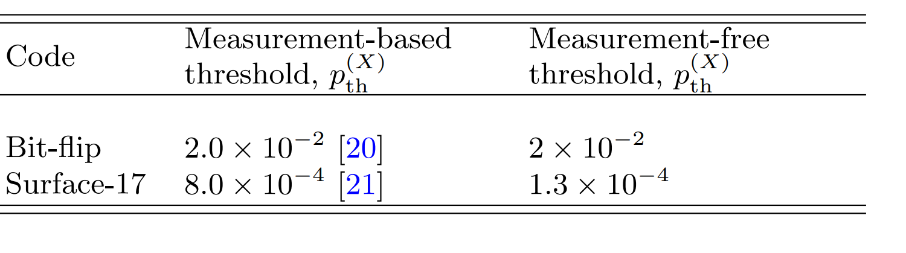

Measurement Free Error Correction
Traditional Quantum Error Correction requires measurment and feed back into quantum circuit. Due to physical law's limitation, they are doomed to be costly timewise. Decoherence could well happen. We present a time-ordered development of measurement free error correction.
Summary
The concept and proof for fault-tolerant measurement free schemes have all been done in the 90s. The rest of the work are either experimental proof or pushing the threshold up.
First of Measurement Free Schemes
The first paper that mentions measurement free quantum error correction was due to Aharonov et. al [4]. Not only did they improve Shor's previous result on threshold of quantum error correction from being polylogarithmic to computation size to constant, but also they shown in Section 4 in the paper that no-measurement was necessary for quantum error correction. More concretely, they constructed a universal set of gates without using measurement. In the paper, they used CSS code and assumed noise is local and un-correlated in time, i.e Markovian. The threshold they obtain is $\eta_c \approx 10^{-6}$.
In a following paper [5], measurement free quantum error correction was used to circumvent the problem of single molecule measurement being impossible on NMR machine. They included concrete example of how to implement these mfqc. No extra theoretical contribution was made.
In a different paper by Peres[6], he linked the measurement of error syndrom being un-necessary with entanglement and teleportation. However, no concrete construction or threshold analysis was given.
Later Developments
Much later, [2] mentions measurement free scheme was. But he did not give any reference to paper. In this paper he was considering the effect of slow and fast measurement on error correction threshold. They reasoned that slow measurement was ok because "measurements can take place concurrently within the many levels of concatenation required to achieve fault tolerance." [12]. Hence making measurement-free scheme only desirable in intermediate scale.
The next development in measurement free scheme was in [3]. It used Bacon-Shor code for example. They shown that the measurement free scheme was "only about an order of magnitude worse than conventional schemes" [12].
[9] provides basic in measurement free quantum error correction.
Experimental Realizations
[1] is an experimental paper that realizes measurement-free quantum error correction on trapped ions. Provided shit reference, inaccurate.
[7] improved threshold for mfeqc "improved these results by using redundant syndrome extractions and reported thresholds for three qubit bitflip (BF), Bacon-Shor, and Steane codes that are comparable to measurement-based values".[12]
[8] provides usage of mfqec in qudit spin.
[10] discussed Fault tolerant classical computation. People that provides garbade citation needs to be punished.
[12] benchmarks measurement free quantum error correction on quantum dots systems. Threshold was shown as below.

[11] implementation in bosonic code.
- 1(Schindler et al., 2011)
- 2(DiVincenzo and Aliferis, 2007)
- 3(Paz-Silva et al., 2010)
- 4(Aharonov and Ben-Or, 1997)
- 5(Roychowdhury et al., jul 2004)
- 6(Peres, 1998)
- 7(Crow et al., 2016)
- 8(Omanakuttan et al., 2024)
- 9(Premakumar, 2019 2019)
- 10(Cruikshank and Jacobs, 2017)
- 11(Gertler et al., 2021)
- 12(Ercan et al., 2018)